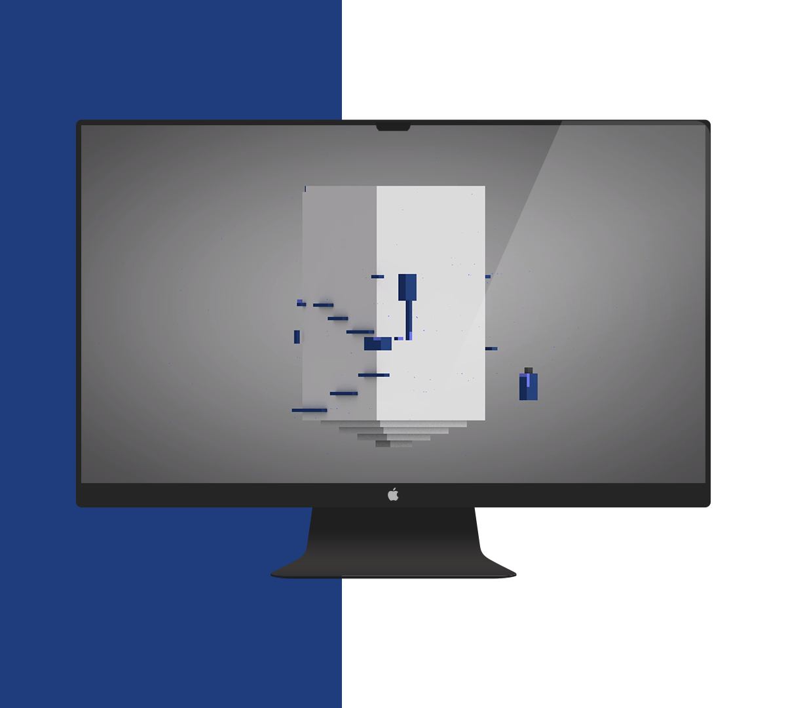
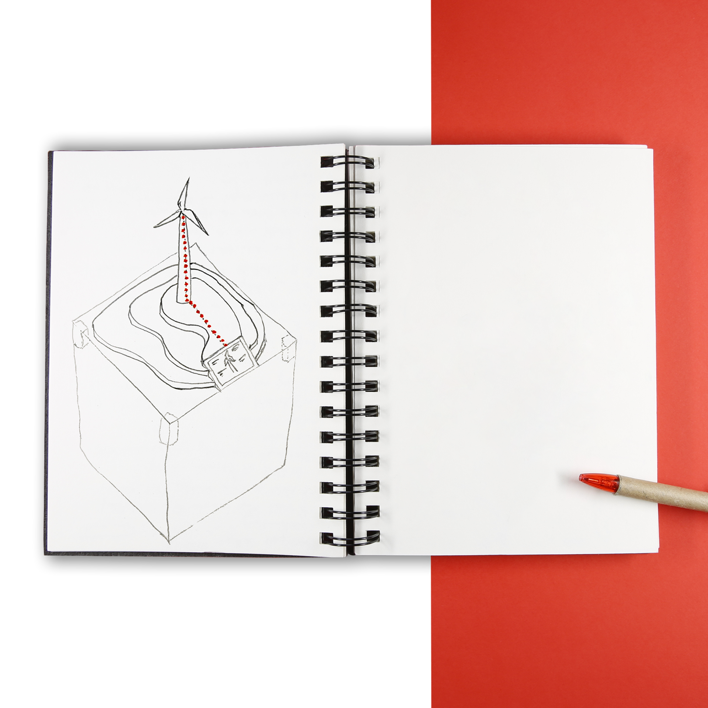
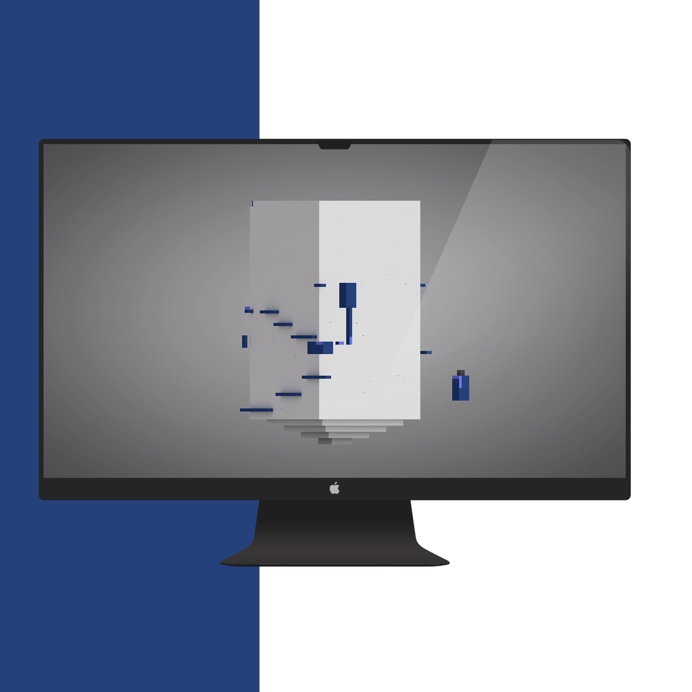
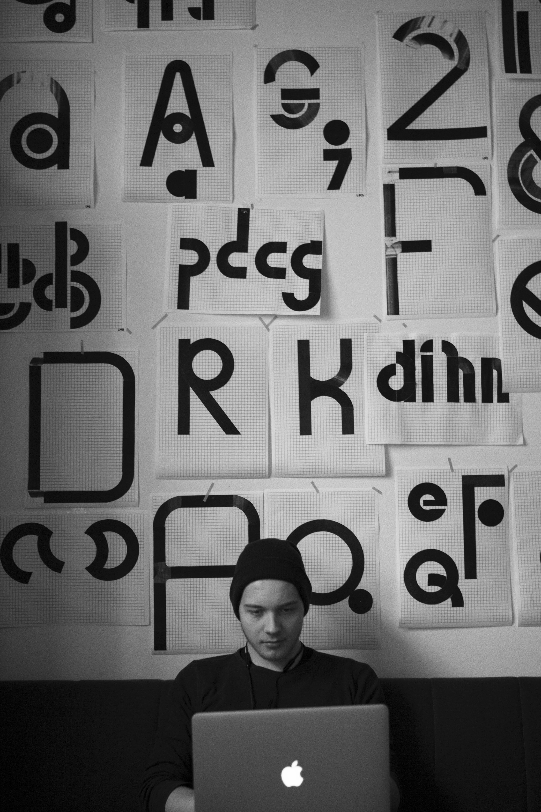

Hello stranger, I'm Marcus.
I love solving complicated design challenges in multiple disciplines
creating valuable products and services
through the usage of prototype, code, testing and execution.
I am looking for exciting work, so don’t hesitate to reach out to me!


courtshare
Bringing user centered design to the
presentation system in court

Exhibition Design
Learn about the digital twin, seeing a windmill and its twin side by side in an interactive exhibit



Methods and
freetime projects
view arrow_right_alt